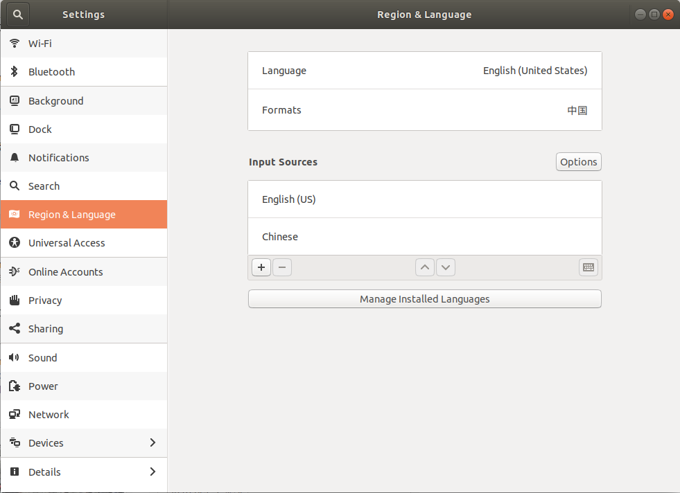
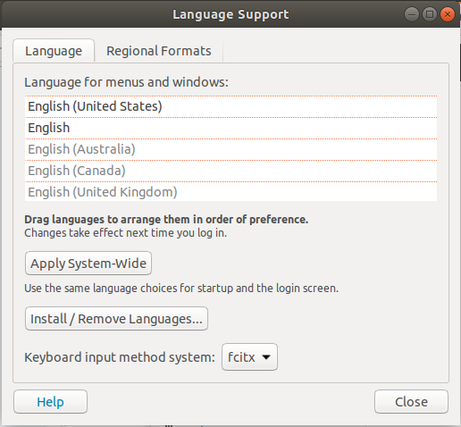
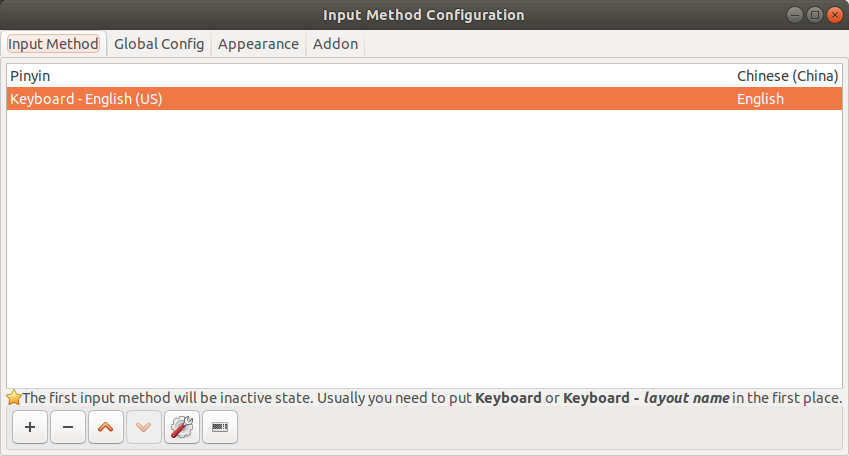
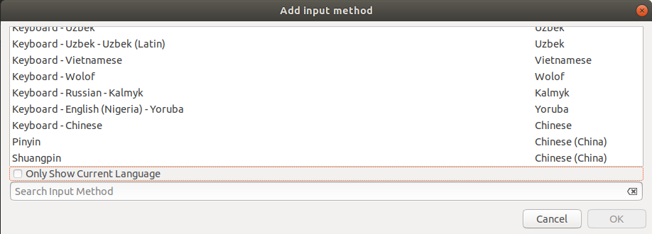

解决依赖关系
不指名解决依赖关系
1 | sudo apt --fix-broken install |
设置默认终端
1 | gsettings set org.gnome.desktop.default-applications.terminal exec /usr/bin/terminator |
快捷键
Ctrl + d: 收藏文件夹
忽略某个包的更新
使用以下命令可以忽略某个包的更新
1 | sudo apt-mark hold (pack) |
取消忽略
1 | sudo apt-mark unhold (pack) |
添加编码
1 | sudo dpkg-reconfigure locales # 跟着步骤配一下自己需要的编码 |
清除已经删除的软件的配置
1 | dpkg -l |grep "^rc"|awk '{print $2}' |xargs apt -y purge |
安装中文输入法
1. 安装fcitx
执行以下命令相关依赖包都会安装上去
1 | sudo apt-get install fcitx-bin |
安装输入法
1 | sudo apt-get install fcitx-table |
2. 配置fcitx
选择设置中的Region & Language一栏中的Manage Installed Language

选择Keyboard input method system:为fcitx

重启ubuntu
3. 配置输入法
重启后看到右上角有个小键盘，点击进入Configure
点击+添加输入法

添加其中的pinyin，即可使用中文输入

Ctrl + Space切换输入法
4. 安装搜狗输入法
到官网下载搜狗输入法，安装后重启，在配置界面调整位置即可，第一次启动或许会有一些问题，重启即可